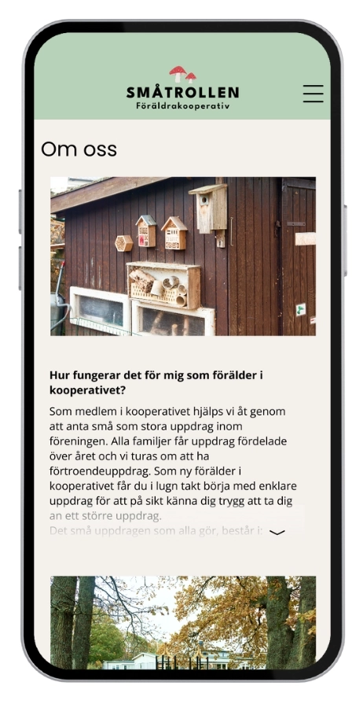
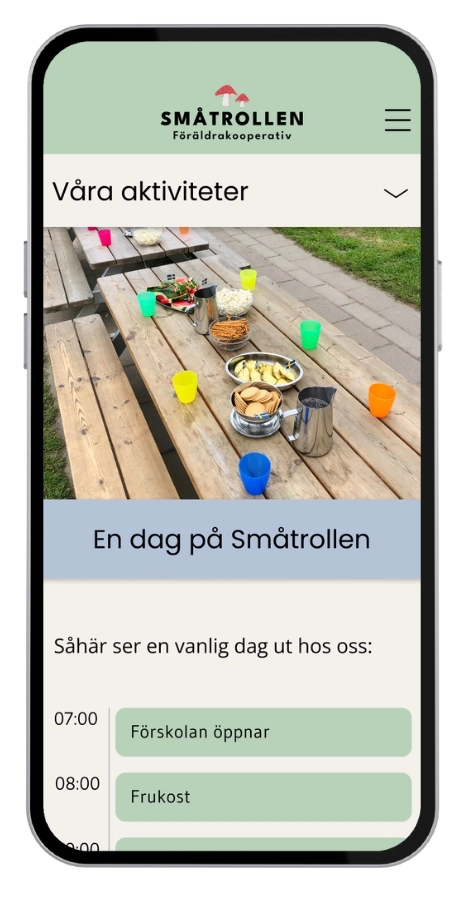
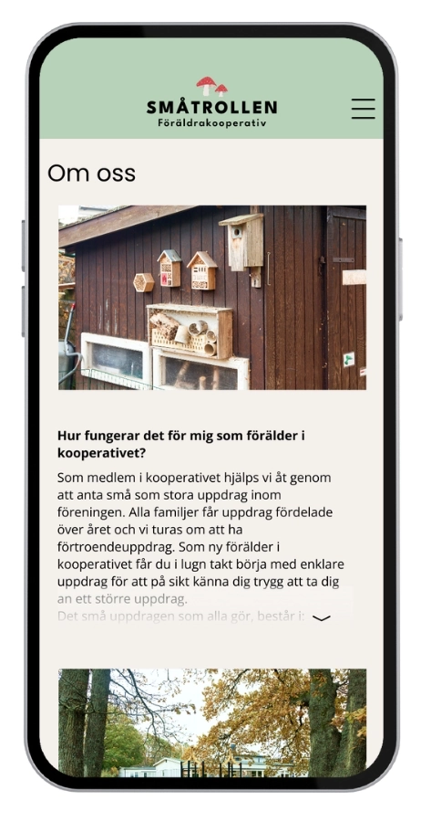
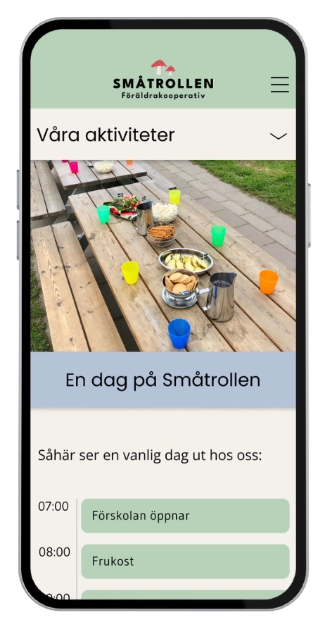

Småtrollen is a preschool in Gothenburg looking to modernize its website. The goal was a fresh, user-friendly design that makes it easier for parents to access important information.
To modernize the Småtrollen Preschool website, making it more user-friendly, visually appealing, and functional, while preserving the core content and messaging. The aim was to create a welcoming and intuitive experience for parents and staff, improving navigation and overall usability.
Småtrollen is a preschool in Gothenburg, known for its focus on sustainability, nature, and active learning. Their website had become outdated and no longer aligned with the preschool’s values or user needs. The project involved close collaboration with the preschool’s team to update the site and provide a more engaging and streamlined experience for their primary users – parents and staff.
Within a condensed two-week sprint, we focused on delivering a Minimum Viable Product (MVP) that would address the most pressing issues. The collaboration with the preschool’s team ensured the design was functional and aligned with their branding and pedagogical approach, all while adhering to the tight timeline.
As part of a four-person team, I was responsible for conducting research, creating wireframes, and designing the visual layout. I worked closely with the preschool’s team to ensure the design was both functional and aligned with their needs. Additionally, I developed a prototype to showcase the proposed improvements in user flow and visual appeal, highlighting the enhancements made to improve navigation and usability.
Småtrollen Preschool’s website was outdated, which made it difficult for users to navigate and access important information. Parents and staff struggled to find key details about the preschool, such as schedules, events, and contact information. The design was not optimized for mobile devices, causing frustration among users who accessed the site on their phones or tablets.
Users struggled to find key pages due to non-standard dropdown menus that didn’t indicate clickable links.
The site was not responsive, causing text and images to appear too small on mobile devices, leading to frustration.
Long blocks of text without subheadings made it hard for users to skim for important information, overwhelming them in the process.
"As a parent, I need to quickly access the preschool’s event schedule on my phone, but the website is not optimized for mobile. On mobile, the text becomes too small to read, and navigation is difficult. I feel frustrated because I can’t find the information I need easily."

To quickly identify user interface issues, we conducted a heuristic evaluation. This process allowed us to swiftly locate deficiencies in the website’s functionality and usability. We documented the problems using problem cards, sorting them by their impact. This provided us with a clear overview of which issues to prioritize, especially given the limited time frame.
During the design phase, we created wireframes to improve both the website layout and user flow. To explore the best solutions, we employed the Crazy 8 technique, which allowed for fast and creative ideation. This method enabled us to test and iterate on different design options, resulting in a structured and visually appealing layout.


The color scheme aligned with Småtrollen’s branding by using earthy tones that reflect the preschool’s focus on sustainability and nature. To enhance readability, we selected a larger font size, particularly for the mobile version. We ensured the design was responsive, providing a consistent and user-friendly experience across all devices. The goal was to create a warm and inviting atmosphere that matched the preschool’s pedagogical values.


 
By modernizing the menu and aligning it with today's standards, we improved the website’s navigation. We implemented a hamburger menu with a categorized structure where larger categories have dropdowns with subcategories. This makes it easy for both new and returning users to quickly find what they are looking for.
The previous design felt outdated and was not optimized for mobile, which is now the primary device for most users. To enhance the mobile experience, we improved the visual hierarchy by increasing the size of both images and text.
Another challenge was that the information was difficult to process due to long blocks of text without clear structure. To address this, we divided the content with clear headings and added a "Read more" feature for longer texts. This prevented the pages from feeling overwhelming, especially on mobile devices.
By implementing a hamburger menu with categorized links and dropdown subcategories, making navigation more intuitive and user-friendly.
Making the website fully responsive and increasing the size of both text and images for better readability on mobile devices.
We addressed this by organizing the content into clear subcategories and implementing a "Read More" button for longer texts, allowing users to expand the content only when needed.
When we presented the final design to Småtrollen preschool, we received very positive feedback. They found the new website modern, user-friendly, and well-aligned with their needs and expectations.
Even though the heuristic evaluation proved to be highly useful, it was not always the optimal method. This became evident when redesigning a website that had remained unchanged for over a decade. During the evaluation, we discovered several missing design components that are now considered standard. Although the previous design did not contain many direct errors, a comprehensive redesign was necessary to meet modern web design standards.